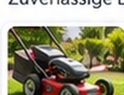
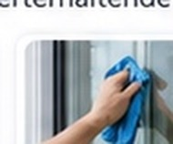
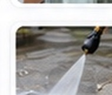
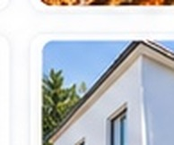
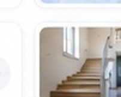

Rasenmähen
Gepflegte Grünflächen für ein schönes Umfeld.
Hausmeisterservice in Oberboihingen
Zuverlässiger Hausmeisterservice und professionelle Objektbetreuung in Oberboihingen. Wir kümmern uns um Ihre Immobilie – zuverlässig, persönlich und mit hohem Qualitätsanspruch.
Termintreue und sorgfältige Ausführung – darauf können Sie sich verlassen.
Ihr Partner direkt in Oberboihingen.
Direkter Ansprechpartner mit individuellem Service und kurzen Wegen.
Individuelle Lösungen für private, gewerbliche und kleinere kommunale Objekte.
Unsere Leistungen
Zuverlässige Leistungen für gepflegte und werterhaltende Immobilien. Individuell, professionell und aus einer Hand.

Gepflegte Grünflächen für ein schönes Umfeld.

Streifenfreie Sauberkeit für klare Aussichten.
Gründliche Entfernung von Laub und Unrat.
Sicher durch die kalte Jahreszeit.
Sauberes Wasser für ungetrübten Badespaß.

Gründliche Reinigung von Terrassen, Wegen und Außenflächen.

Für einen gepflegten und wertbeständigen Eindruck.

Saubere und einladende Gemeinschaftsbereiche.
Über uns
Mein Name ist Ricardo Dias. Mit RD Homemaster – Hausmeisterservice stehe ich persönlich für zuverlässige, professionelle und faire Objektbetreuung in Oberboihingen.
Mit viel Engagement, einem hohen Qualitätsanspruch und direktem Ansprechpartner kümmere ich mich um Ihre Immobilie – so, wie ich es auch bei meiner eigenen erwarten würde.
Mehr über uns →Ablauf
Rufen Sie an oder schreiben Sie uns kurz, welche Leistung benötigt wird.
Wir klären Objekt, Umfang und die wichtigsten Details.
Sie erhalten ein individuelles Angebot passend zur Anfrage.
FAQ
Für private Eigentümer, Gewerbekunden und nach Vereinbarung für die laufende Betreuung von Objekten.
Ja. Leistungen können einmalig, saisonal oder regelmäßig vereinbart werden.
Der Schwerpunkt liegt in Oberboihingen.
Am einfachsten telefonisch oder per E-Mail. Nennen Sie die gewünschte Leistung, den Ort und ungefähr den Umfang.
Kontakt
Schildern Sie kurz Ihre Anfrage. Wir klären gemeinsam die passende Leistung und den benötigten Umfang.